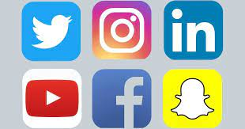

AS REDES SOCIAS DA EMPRESA:

SUGESTÃO PARA EMPRESA:

Sede:Cupertino, Califórnia, EUA
história SugarCRM
O SugarCRM é um dos softwares de CRM de código aberto mais conhecidos do mercado. Fundado em 2004, mais de 7.000 clientes e mais de meio milhão de usuários confiam no CRM para executar ações de marketing, aumentar as vendas e reter clientes.
O QUE É SUGARCRM?
O SugarCRM é um produto de CRM corporativo com módulos para gerenciamento de empresas e divisões, contatos, prospects, oportunidades, ocorrências, campanhas de marketing, projetos, documentos, agenda e histórico. Sendo um produto open source, é distribuído gratuitamente na versão Sugar Community Edition.
Quem usa o SugarCRM?
O SugarCRM é uma plataforma e aplicativo horizontal de CRM para clientes que buscam soluções fáceis de usar, que simplifiquem até mesmo os processos mais complexos de gerenciar de ponta a ponta.
PRESIDANTE DA SUGARCRM
Enrique Perezyera SugarCRM
.jpg)
Dentro disso, ele acredita que esse ano será marcado pelo reposicionamento do CRM como ferramenta essencial e fator "chave" na corrida para os negócios. "Ao contrário de duas décadas atrás, quando foi criado como ferramenta de gerenciamento, monitoramento e emissão de relatórios, o CRM vem se reposicionando para o centro de uma estratégia de sucesso, devido a uma modificação do modelo de negócios da era digital."
O QUE É SUGARCRM?
O SugarCRM é um produto de CRM corporativo com módulos para gerenciamento de empresas e divisões, contatos, prospects, oportunidades, ocorrências, campanhas de marketing, projetos, documentos, agenda e histórico. Sendo um produto open source, é distribuído gratuitamente na versão Sugar Community Edition.
AS REDES SOCIAS DA EMPRESA:
SUGESTÃO PARA EMPRESA: